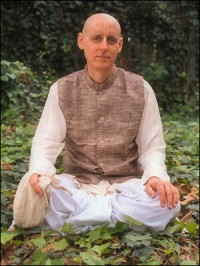

<ion-view style="" id="aboutUs" title="About Us">
    <ion-content class="has-header" overflow-scroll="true" padding="true">
        <div><h3>Our Mission</h3></div>
        <div><p>To help everyone awaken their original Krishna consciousness, which is eternal, full of knowledge and full of bliss. Such a global awakening will, in one stroke, solve all the problems of the world society bringing in a new era of unprecedented peace and prosperity for all. May that day, which the world so desperately needs, come very soon. We request you to participate in this mission by reviving your dormant Krishna consciousness and assisting us in spreading this science all over the world.</p></div>
        <div>&nbsp;</div>
        <div><h3>Our Teacher</h3></div>
        
            <div>
                <p>His Grace Sriman Sankarshan Das Adhikari appeared in this world in St. Louis, Missouri, USA on 7 November 1947, the tenth day (Dasami) of the most holy month of Kartik according to the Vaisnava calendar. He first met his spiritual master, His Divine Grace A.C. Bhaktivedanta Swami Prabhupada, in 1971 and was initiated by him on 12 August of the same year.  Srila Prabhupada personally told this new young disciple that he was pleased with his sincerity and enthusiasm for spreading the Krishna consciousness movement. Sankarshan Das fully dedicated his life for serving the order of his spiritual master to become a guru and deliver the world. For the last 43 years he has uninterruptedly served his spiritual master’s movement, the International Society for Krishna Consciousness (ISKCON), in various capacities.</p>
                <p>In the year 2000, in recognition for his full dedication to Srila Prabhupada’s mission, ISKCON’s Governing Body Commission (GBC) gave him their blessings to initiate disciples. Since that time he has been regularly traveling and lecturing extensively all over the world for reviving the dormant Krishna consciousness in the hearts of all living beings. Well known for his Internet based training program, the Ultimate Self Realization Course, he has attracted over 16,000 subscribers from over 100 different countries who receive a daily inspirational message and personal answers to their questions regarding how to become perfect in Krishna consciousness. Those who are interested can join his course at: <a href="www.backtohome.com">www.backtohome.com</a></p>
            </div>
</ion-content>
</ion-view>